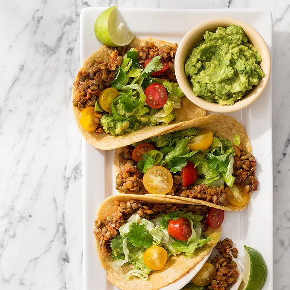

Lentil Tacos

This vegan version of classic tacos uses lentils instead of ground beef, along with other flavors so good
you'll never miss the meat!
Ingredients:
Spice Mix:
- 2 teaspoons ground ancho chile powder
- 1 teaspoon ground cumin
- ½ teaspoon ground coriander
- ½ teaspoon dried oregano
- ½ teaspoon salt
- ¼ teaspoon ground fennel seed
Filling:
- 2 teaspoons olive oil
- 1 small onion, minced
- 2 cloves garlic, minced
- 2 ½ cups cooked brown or green lentils
- 3 tablespoons tomato paste
- 2 tablespoons water, or as needed
- 2 canned chipotle chiles in adobo sauce, seeded and minced
- 1 teaspoon adobo or hot sauce
Tacos:
- 8 (6 inch) vegan corn or flour tortillas
- 1 cup shredded lettuce
- 1 cup chopped tomatoes
- ¼ cup chopped fresh cilantro
- 1 cup guacamole
- 1 lime, cut into 8 wedges
Steps:
- Combine ancho chile powder, cumin, coriander, oregano, salt, and fennel in a small bowl.
- Heat oil in a large skillet over medium-high heat. Cook onion and garlic, stirring occasionally,
until lightly browned, about 3 minutes. Add spice mixture and cook, stirring, until toasted,
about 30 seconds.
- Reduce heat to medium and add cooked lentils, tomato paste, a few splashes of water,
and chipotle peppers. Cook, mashing lightly with a fork and adding water if necessary,
until lentils are heated through and hold together, about 5 minutes. Season with additional salt
if needed and adobo or hot sauce.
- Lightly toast tortillas in a cast-iron skillet over medium heat. Spread about 1/3 cup filling down
center of each tortilla. Top with lettuce, tomatoes, and cilantro. Serve with guacamole and lime wedges.
Home